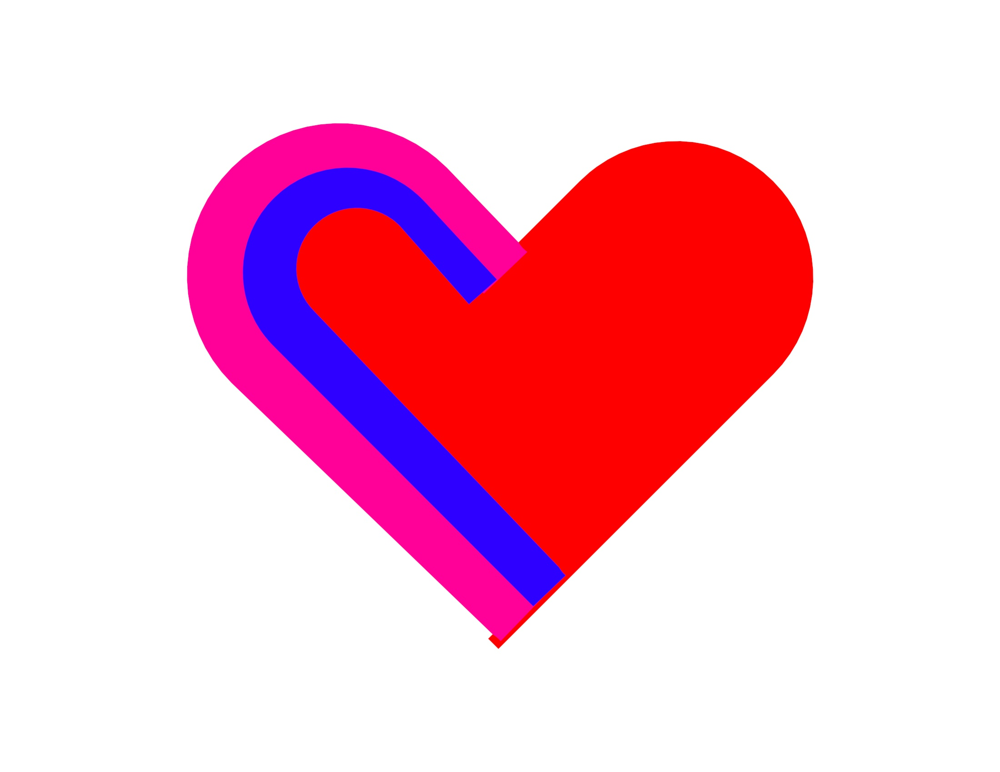

Volunteering:
What I do:
I’m involved in a number of different volunteer projects around the California San Francisco Bay Area. I’m a volunteer project leader for Hands On Bay Area, a volunteer through One Brick San Francisco, and I’ve logged over 100 hours at various other homeless shelters and non profits.

My volunteer experience:
-About 85 hours with Hands On Bay Area volunteering at various projects.-About 80 hours serving food at various homeless shelters and senior centers. (Mostly at Next Door Shelter and Curry Senior Center)
-about 20 hours helping out at other non profits: Wardrobe For Opportunity, Covenant House California, At the Crossroads, Food not bombs in Berkeley
. -Web administration for a Berkeley nonprofit (3 year commitment completed)
-Graphic design and food service for YEAH homeless shelter.
I did a YEAH shirt design they used as part of their marathon:

Want to volunteer like me?
Sign up for Hands On Bay Area and get involved in some of their projects:https://www.handsonbayarea.org/
(Requires a one time 25 dollar charity donation)
Sign up for One Brick and volunteer at one of their events:
https://onebrick.org/
Look up volunteering events through Meetup. I’ve found many great events through Meetup. Especially homeless shelter volunteer events.
https://www.meetup.com/
Look up volunteering opportunities on VolunteerMatch!
https://www.volunteermatch.org/

This is the desktop version of this website
You should check this site out on your phone, too.
The mobile version is pretty sweet.
40% nerd
20% artist
20% fitness nut
20% big brother
100% Heart